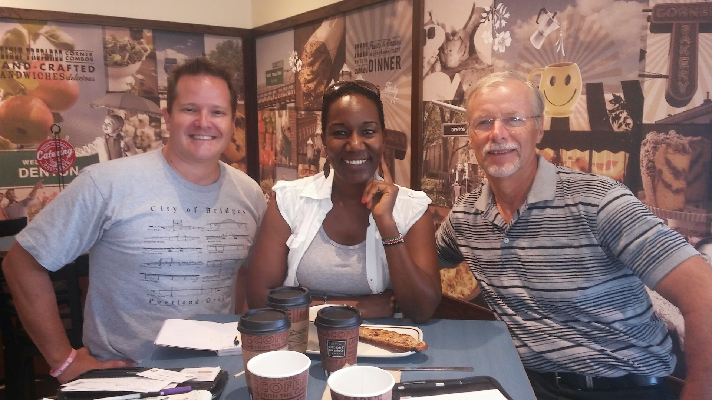
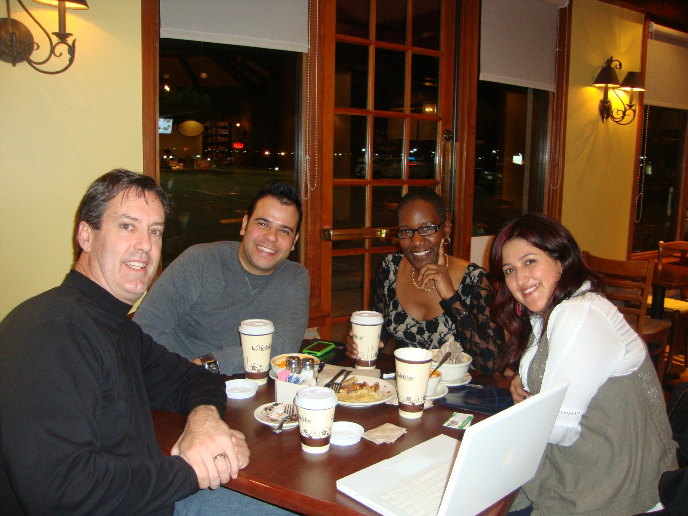
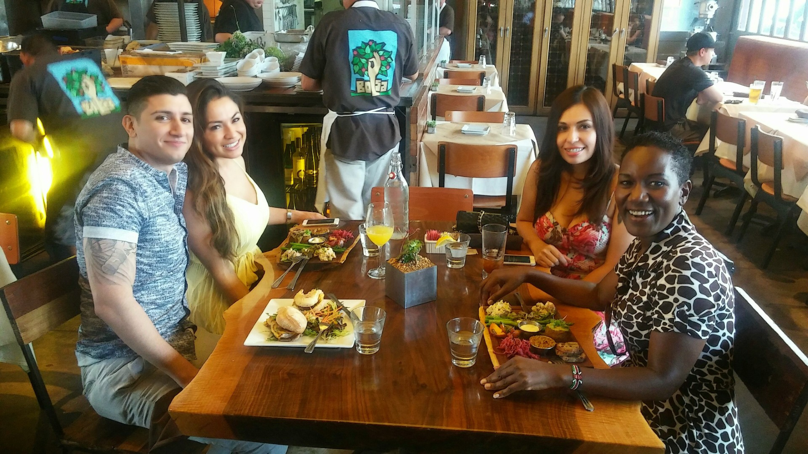
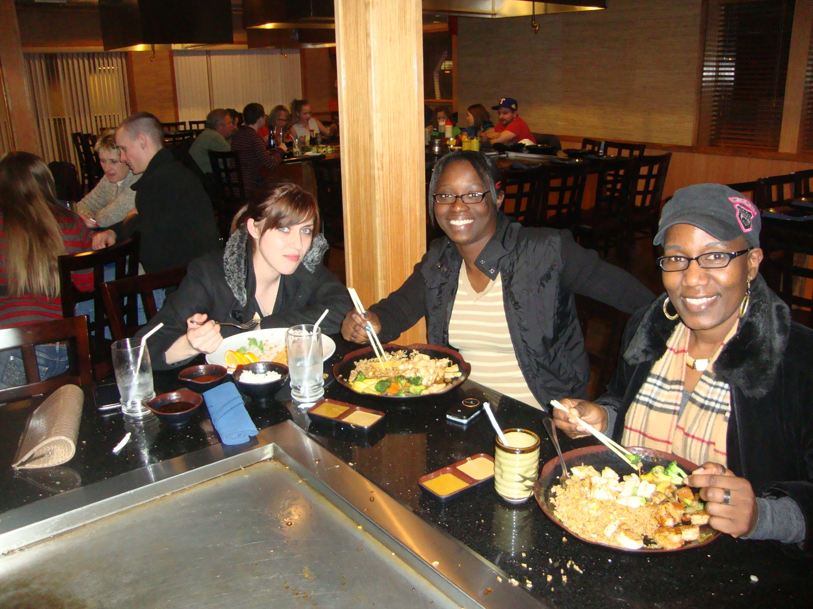

Founder & Lead Mentor
A glimpse into the life, journey, and calling of Rosemary Nzembi, the visionary behind Made to Thrive.
Certified Professional Life Coach, Founder of Made to Thrive / Twinkle Little Stars, Inc.
“Where there is a will, there is a way.”
A Certified Professional Life Coach, Rosemary also holds two college degrees from Dallas County & Concordia University respectively. Associate in Applied Sciences (AASc) in Computer Information Technology & Bachelor of Applied Science (BAsc) in Operations & Project Management. Her professional experience includes; Computer Information Technology, Project Management & Process Optimization, International Entrepreneurship, Strategic International Procurement, Professional Coaching, Public Speaking, & Engineering Operations Management. From an early age, Rosemary determined that if she was going to make it in life; she needed to change several aspects of her culture, including intentional mental transformation. Born to an unwed teenage mother, she grew up under her widowed grandmother, constantly grappling with abject poverty and constant social ridicule; in the remote village of Matetani, of Eastern Kenya. Determined to change the course of her life, she worked her way through fatherlessness, childhood poverty, abuse and other social misfortunes, experienced by most kids in her category. She attributes her strong Christian foundation to her Grandma Lois Isika, who was well respected in her community, regardless of her poor widowed status, which stood out like a sore thumb! Especially for the mere fact that she was raising six girls, after her son succumbed to Malaria at the very tender age of one!
Lois taught Biblical truths and strong work ethics, along with social principles that came with a strong dose of personal discipline. Upon completing high school education, Rosemary moved to the capital city of Nairobi, in pursuit of a better life. She was overly ambitious and at times came across as a threat, even to those whom she looked up to for career guidance and professional empowerment. After a few years of thankless toiling and no outlet, she devised her own escape from a relative’s house, with hopes of blazing her own path into the life of her dreams. And they were big! So big, that even her family feared she would get into deadly traps, in pursuit of something that they couldn’t comprehend! The highest career achievement in her immediate family circle was “civil service,”
highly coveted for its loan services and retirement benefits. Rosemary’s dream transcended the conventional career path and she couldn’t stop long enough, to hear all about these bells and whistles. It’s as if she was high on some forbidden intoxicating drug! Girls were not encouraged to dream big or work too hard towards unconventional career pathways. No one, including Rosemary herself, understood what career path she was pursuing. She was just convinced that her life trajectory had to change, for the better! Through unskilled jobs and thankless earnings, she pursued meaningful networks with the elite. She targeted connections that were sure to open the next door up the ladder. And they did!
After a few years of toiling, hustling and networking in Nairobi, the skies opened up for young Rosemary! She relocated to the United States of America, to pursue college education and professional career opportunities. She had no family in America, but that didn’t matter. She had learnt to look through every obstacle, with an invisible clear lens of unshakable faith! While studying in Texas, Rosemary discovered her path and purpose. In 2006, she established Twinkle Little Stars, Inc.; a non-profit organization that has since been supporting the educational needs of disadvantaged children in Africa.
“Where there is a will, there is a way” was birthed in the 17th century and still holds true today!
Rosemary’s Perspective:




Explore Rosemary's coaching, speaking, and business resources, and connect with her work beyond Made to Thrive.
rosemarynzembi.com